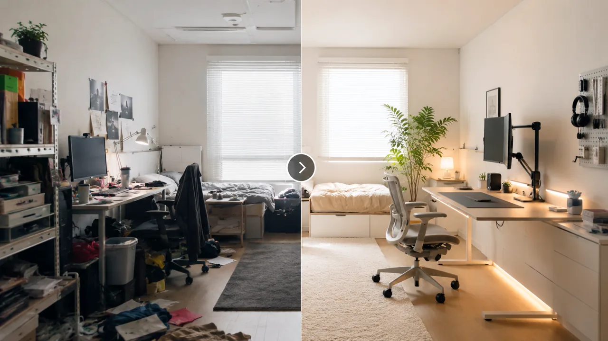

원룸에서 일과 휴식을 분리하는 구역 설정 리뷰

TrendFlow Guide원룸에서는 공간이 좁아서가 아니라 경계가 없어서 집중이 어려운 경우가 많습니다. 이 글은 조명, 가구 방향, 수납 위치를 이용해 한 공간 안에 두 개의 분위기를 만드는 방법을 정리합니다.
이 글은 단순 추천이 아니라, 왜 이 주제가 요즘 관심을 받는지와 실제 사용 관점에서 무엇을 먼저 바꾸면 좋은지 정리한 글입니다.
이런 상황이라면 이렇게 시작하세요
책상과 방이 좁은 것보다 눈에 들어오는 물건과 케이블이 많아서 더 답답하게 느껴질 수 있어요.
큰 가구를 바꾸기보다 책상 위에 항상 올라와 있는 물건부터 줄이는 편이 체감이 빠릅니다.
케이블, 종이류, 자주 쓰지 않는 물건을 먼저 치우고 물건의 고정 위치를 정하세요.
지금 책상 위에서 오늘 쓰지 않을 물건 3개만 먼저 빼보세요.
- 지금 가장 불편한 문제와 직접 연결되는지 확인
- 매일 반복해서 사용할 가능성이 높은지 확인
- 이미 가진 것과 조합해서 바로 실행 가능한지 확인
왜 지금 이 주제가 뜨는가
- 작은 주거 공간이 늘면서 미니멀한 원룸 셋업에 대한 관심이 계속되고 있습니다.
- 집중력·디지털 웰빙 이슈와 맞물려 “쉬는 공간과 일하는 공간 분리”가 중요해졌습니다.
- 인테리어보다 실제 사용감 중심의 공간 팁에 대한 수요가 많습니다.
실사용 관점 리뷰
실사용 관점에서 가장 체감이 큰 요소는 조명입니다. 같은 방이어도 작업할 때 켜는 조명과 쉬는 시간에 켜는 조명을 분리하면 심리적 전환이 빨라집니다.
또한 책상과 침대의 시선이 바로 마주치지 않게 하는 것만으로도 집중감이 나아질 수 있습니다. 큰 가구 변경이 어렵다면 스탠드 조명이나 작은 선반으로 경계를 만드는 것도 효과적입니다.
비교해서 보면 좋은 포인트
| 구분 | 우선 확인할 점 | 추천 방향 |
|---|---|---|
| 조명 분리 | 작업용 조명이 따로 있는가 | 작업 신호용 조명 추가 |
| 시야 분리 | 침대와 책상이 직접 마주치는가 | 방향 조정 또는 가벼운 가림 |
| 수납 분리 | 작업 도구와 생활용품이 섞이는가 | 존별 수납 위치 고정 |
사지 않아도 되는 경우
- 가구를 자주 옮기기 어려운 구조인 경우 큰 변경부터 시작하는 것
- 보기 좋은 소품만 늘리는 경우
- 작업 도구보다 생활 동선 문제가 더 큰 경우
쇼츠 연결 아이디어
- 원룸 한 방에서 작업존/휴식존을 나누는 전후 영상
- 조명 하나로 분위기가 바뀌는 비교 영상
- 침대와 책상 동선 정리 팁 3가지 쇼츠
관련 글 연결
바로 사기 전에 이 기준부터 확인하세요
추천 대상
책상 위 물건과 전선 때문에 공간이 계속 복잡해 보이는 사람
먼저 볼 항목
케이블 정리함, 수납박스, 책상선반
사지 않아도 되는 경우
버릴 물건을 정하지 않았다면 수납함부터 사지 마세요.
먼저 해볼 것
책상 위에 오늘 쓰지 않는 물건 3개부터 빼보세요.
이 페이지는 제휴 링크를 포함할 수 있으며, 실제 구매 전에는 본인의 공간·예산·사용 빈도를 먼저 확인하는 것을 권장합니다.
지금 해볼 것 선택
바로 구매를 유도하기보다, 내 상황에 맞는 글을 더 읽고 필요한 항목만 비교하는 흐름을 추천합니다.